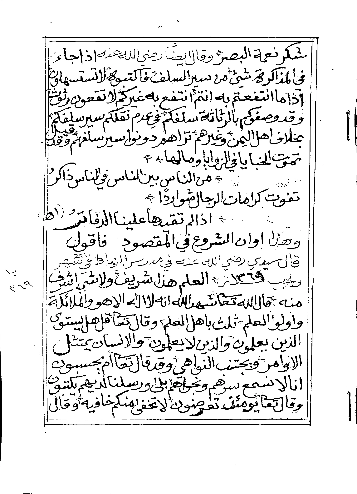

Cetak
Rp 20per kata (Rp 5.000 per 250 kata)
- Transkripsi naskah cetak
- Formatting Word standar, gratis
- Hasil: Word, PDF, teks polos
OpenTurath AI for Manuscripts
Mengetik ulang memakan berminggu-minggu, sedangkan OCR biasa berantakan pada tulisan tangan. Foto naskah Anda: AI kami menyalinnya apa adanya, menata ayat, syair, dan catatan kaki, lalu menandai bagian yang tak terbaca alih-alih menebaknya. Formatting Word gratis.
Geser garis ke kiri dan kanan. Kiri adalah naskah aslinya, kanan adalah hasilnya.
شكر نعمة البصر. وقال أيضا رضي الله عنه: إذا جاء في المذاكرة شيء من سير السلف فاكتبوه، لا تتساهلون، إذا ما انتفعتم به أنتم انتفع به غيركم، لا تقعون رتوش، وقد وصفوكم بالرثاثة سلفكم في عدم نقلكم سير سلفكم، بخلاف أهل اليمن وغيرهم تراهم دونوا سير سلفهم. وقد قيل:
اهـ.
وهذا أوان الشروع في المقصود فأقول:
العلم هذا شريف ولا شيء أشرف منه، قال الله تعالى: ﴿شَهِدَ اللَّهُ أَنَّهُ لَا إِلَٰهَ إِلَّا هُوَ وَالْمَلَائِكَةُ وَأُولُو الْعِلْمِ﴾ [آل عمران: ١٨]، ثلث بأهل العلم، وقال تعالى: ﴿قُلْ هَلْ يَسْتَوِي الَّذِينَ يَعْلَمُونَ وَالَّذِينَ لَا يَعْلَمُونَ﴾ [الزمر: ٩]، والإنسان يمتثل الأوامر ويجتنب النواهي، وقد قال تعالى: ﴿أَمْ يَحْسَبُونَ أَنَّا لَا نَسْمَعُ سِرَّهُمْ وَنَجْوَاهُمْ بَلَىٰ وَرُسُلُنَا لَدَيْهِمْ يَكْتُبُونَ﴾ [الزخرف: ٨٠]، وقال تعالى: ﴿يَوْمَئِذٍ تُعْرَضُونَ لَا تَخْفَىٰ مِنْكُمْ خَافِيَةٌ﴾ [الحاقة: ١٨]، وقال

Kitab كشف الحجاب, halaman 3 naskah. Teks hasil ditampilkan apa adanya.
Kami merancang alur AI khusus untuk naskah Arab, dengan aturan kerja yang ketat. Tujuannya satu: hasil yang setia pada naskah.
Dengan harakat, nama surat, dan nomor ayat.
Bait ditata dua syatr sejajar, seperti di cetakan.
Arti kata dan istilah dijelaskan di bawah halaman.
Halaman terduplikasi, hilang, atau salah nomor dilaporkan.
Ayat, catatan kaki, dan deskripsi adalah tambahan penyusun berbantuan AI. Isi naskah tidak diubah.
Cara ujinya bisa diperiksa orang lain: 45 halaman dipilih acak dari kitab uji 400 halaman, dibagi tiga kelompok (cetak, tulisan tangan bersih, halaman sulit). Dua pemeriksa mandiri mengoreksi hasilnya huruf demi huruf. Angkanya kami umumkan di sini begitu selesai, apa pun hasilnya.
Berapa persen huruf yang tepat, tanpa menghitung harakat.
Berapa persen kata yang utuh dan benar.
Dipisah: harakat di dalam kata dan harakat akhir kata.
Apakah teks utama dan catatan pinggir tidak tercampur.
Sampai angka itu terbit, yang bisa kami buktikan adalah demo di atas dan contoh hasil yang dapat Anda unduh. Suara pelanggan akan kami tampilkan hanya bila ada kutipan asli dengan izin.
Gratis, tanpa kewajiban, dan konsultasi gratis. Lampirkan lewat email.
Harga dan waktu, dihitung dari kata pada contoh Anda.
Anda tahu kapan selesai sebelum kami mulai.
Word, PDF, dan teks polos.
Satu kitab 400 halaman, dibandingkan dengan jasa pengetikan Arab lain di Indonesia.
Harga pasar Indonesia untuk pengetikan ulang teks Arab, dicek 29 Oktober 2026. Satuan "halaman" tiap penyedia berbeda, jadi angka di bawah adalah perkiraan, bukan perbandingan persis.
| Tarif per halaman | Kitab 400 halaman | Catatan | |
|---|---|---|---|
| Pengetik lepas (Fastwork) | Rp 2.000, atau Rp 2.500 dengan harakat | Rp 800.000 sampai Rp 1.000.000 | Minimal 16 sampai 20 halaman. Tarif untuk teks cetak; tulisan tangan tidak dicantumkan. Formatting tidak disebut. |
| Jasa ketik profesional (5 hari) | Rp 10.000, harakat +Rp 3.000 | Rp 4.000.000, dengan harakat Rp 5.200.000 | Tenggat 5 hari untuk dokumen biasa; kitab 400 halaman umumnya perlu penawaran sendiri. |
| Jasa ketik profesional (1 hari) | Rp 25.000, harakat +Rp 3.000 | Rp 10.000.000, dengan harakat Rp 11.200.000 | Tarif tercepat. Kemampuan membaca tulisan tangan tidak dicantumkan. |
| OpenTurath Manuskrip | Rp 20 per kata cetak, Rp 30 per kata tulisan tangan (setara Rp 5.000 dan Rp 7.500 per halaman 250 kata) | Rp 2.000.000 cetak, Rp 3.000.000 tulisan tangan | Formatting Word gratis. Tiga halaman pertama gratis. Konsultasi gratis. Tagihan akhir tidak melebihi perkiraan + 10%. |
Sumber: Jagoketik, Adikom, Fastwork. Pengetik lepas bisa lebih murah di atas kertas. Selisih kami ada pada tulisan tangan, ketepatan syair dan ayat, serta formatting yang sudah termasuk.
Tanda centang berarti ada. Tanda "–" berarti tidak dicantumkan pada layanan yang kami periksa, atau umumnya tidak tersedia.
| Jasa ketik | OCR gratis | OpenTurath Manuskrip | |
|---|---|---|---|
| Membaca tulisan tangan | Tidak dicantumkan | Tidak dicantumkan | Ya |
| AI khusus naskah Arab | Tidak dicantumkan | Tidak dicantumkan | Ya |
| Bagian tak terbaca ditandai, tidak ditebak | Tidak dicantumkan | Tidak dicantumkan | Ya |
| Ayat berharakat, dengan nama surat dan nomor ayat | Harakat berbayar tambahan | Tidak dicantumkan | Ya |
| Syair ditata, bait dua syatr sejajar | Tidak dicantumkan | Tidak dicantumkan | Ya |
| Catatan kaki penjelas | Tidak dicantumkan | Tidak dicantumkan | Ya paket Lengkap |
| Deskripsi naskah: halaman terduplikasi, hilang, salah nomor | Tidak dicantumkan | Tidak dicantumkan | Ya paket Lengkap |
| Formatting Word standar gratis | Tidak dicantumkan | Tidak dicantumkan | Ya |
| Hasil Word, PDF, dan teks polos | Tidak dicantumkan | Tidak dicantumkan | Ya |
| Tagihan tidak melebihi perkiraan + 10% | Tidak dicantumkan | Tidak dicantumkan | Ya |
| Tiga halaman pertama gratis | Tidak dicantumkan | Tidak dicantumkan | Ya |
| Konsultasi gratis | Tidak dicantumkan | Tidak dicantumkan | Ya |
| Perjanjian kerahasiaan bila diminta | Tidak dicantumkan | Tidak dicantumkan | Ya |
| Kuitansi resmi untuk laporan hibah | Tidak dicantumkan | Tidak dicantumkan | Ya |
Satu halaman standar adalah 250 kata, jadi Rp 5.000 per halaman standar sama dengan Rp 20 per kata.
Rp 20per kata (Rp 5.000 per 250 kata)
Rp 30per kata (Rp 7.500 per 250 kata)
+ Rp 10per kata (Rp 2.500 per 250 kata)
Layout khusus (ukuran buku, InDesign, siap cetak) ditawarkan terpisah. Formatting standar adalah dokumen Word yang rapi dan siap disunting.
Rp 2.000.000
400 × 250 = 100.000 kata × Rp 20
Tagihan akhir tidak melebihi Rp 2.200.000 (perkiraan + 10%).
Kuitansi resmi untuk laporan pertanggungjawaban hibah, harga khusus untuk volume besar, dan perjanjian kerahasiaan bila naskah Anda sensitif. Sebutkan kebutuhan Anda di formulir di bawah.
Teks naskah yang setia, tertata, dalam file yang bisa disunting.
Tahqiq, muqabalah, penilaian isi, dan keputusan menerbitkan. Catatan kaki dan deskripsi adalah catatan penyusun berbantuan AI, bukan keputusan ilmiah. Hasil ini bukan tashih resmi.
Kami tidak mempublikasikan naskah Anda. File dihapus 30 hari setelah hasil dikirim, atau lebih cepat bila Anda minta. Pastikan Anda berhak memproses naskah yang dikirim, terutama bila naskah itu milik pihak lain, wakaf, atau masih dilindungi hak cipta.
Karya ulama yang wafat lebih dari 70 tahun lalu pada umumnya telah menjadi milik umum, tetapi tata letak dan catatan penyunting edisi modern masih dilindungi. Ketentuan lengkap ada di situs OpenTurath.
Kirim 3 halaman, gratis. Konsultasi juga gratis: tanyakan jenis naskah Anda, perkiraan biaya, atau cara memotret sebelum memutuskan memesan. Isi formulir ini, lalu lampirkan fotonya pada email yang terbuka.